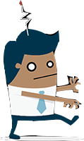
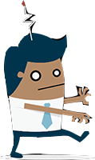
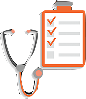
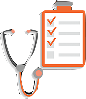

1
NO COFFEE BEFORE 10AM
Cortisol is a hormone that makes us feel alert and awake. The best time to drink coffee is when its levels dip, i.e. 10-11 a.m. and 2-5 p.m.


Cortisol is a hormone that makes us feel alert and awake. The best time to drink coffee is when its levels dip, i.e. 10-11 a.m. and 2-5 p.m.


 



About 400mg of caffiene is safe for adults (there's 65-100 mg of caffiene in a cup of instant coffee). More than this leads to restlessness, tremors, irritability, an upset stomach and insomnia
A 200 mg dose of caffiene can boost memory. But for this to happen, you have to drink coffee right after the learning event, not before. Coffee, however, does not make you more creative.


Drink a cup of coffee, take a nap, and in 20-30 minutes it will kick in and wake you up. Besides using fat as fuel, coffee increases the concentration of endorphins in the brain, making you want to exercise.
The latest research shows that coffee drinkers have a lower risk of dying prematurely from heart disease, stroke, suicide, and neurological diseases. It's additions like milk, cream, sugar and artificial flavours are what add unnecessary fat and calories.
 
